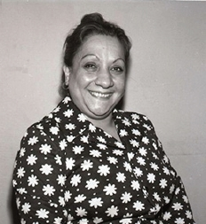
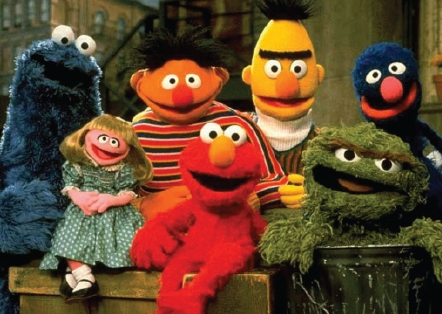

Çocuklara özel yapılan bazı programlardan bahsetmek iyi olacak. Bu tür programların başında Uykudan Önce’ler gelir. Çeşitli zamanlarda farklı insanlar bu programları sunmuşlardır. En iyi hatırlananların başında Adile Naşit’in hazırladığı gelir.
Uykudan Önce Adile Naşit ile özdeşleşmiştir. Saydığı isimler arasında eğer sizinki de varsa değmeyin keyfinize, hatta ara sıra yaptığı şeyler vardı ki, “Vay be! Bu kadın her yaptığımızdan haberdar,” dedirtecek cinstendi.
Adile Teyzemiz ara sıra çıkışlar yapar, o da tesadüf edebilirdi. Ve biz de onları gerçekten o anda yapan ve söylediği ismin sahibi olan çocuklardık. Mesela “Hüseyiiin! Bırak o makası elinden, hadi benim kuzucuğum, üzme anneni,” dediğinde, ekran karşısında elinde makas olan belki de onlarca Hüseyin olur ve hepsi de tırsarlardı o anki hallerinden.
Ben de bu durumdan nasibini alanlardanım. Bir gün “Oğuuuz! Televizyona o kadar yaklaşma oğlum,” dediğinde ödüm patlamıştı. Uykudan Önce’nin mimarının Ergun Uçucu olduğunu bilen ve uzun süre de o destansı sesi ile anlattığı masalları dinlemiş olan biriyim.

Program içinde Tonton Ailesi, Atom Karınca gibi çizgi filmlerin yayınlandığını da hatırlıyorum. Güzel gelirdi bu bize.
Türk temaşa sanatının gözbebeklerinden bir olan gölge oyunumuz Karagöz-Hacivat da evvelden TRT’de yayınlanır, ta eski zamanlarda nasıl gülüyor, eğleniyorsa insanlar, o zamanın çocukları olan bizler de öylece Karagöz’ün hatalarına, yanlış anlamalarına gülerdik.
Bir çocuk programı da Rüştü Asyalı’nın eşsiz sunumuyla ekranlara gelen Pertev Penguen’in maceralarıydı. Rüştü Asyalı görünmez arkadaşı Pertev Penguen’in etrafında döner durur, türlü hikâyeler anlatırdı.
Öyle iyi sohbet ederlerdi ki, çocuk aklımızla orada gerçekten bir penguen var sanırdık. Rüştü Asyalı, Pertev kısık sesle konuştuğu için bazen duyamaz, eğilip elini kulağına götürür ve Pertev’e ne dediğini tekrarlatırdı.
Beyaz bir fon önünde bir adet sandalye, bir adet portmanto, bir adet tiyatrocu ve birkaç ufak tefek dekorla koca program yapılırdı. Ne şimdiki gibi acayip renklerle hazırlanmış, şatafatlı dekorlar, ne dikkati başka yerlere yönlendirecek görseller... Sadece hikâyeler anlatan bir adam ve hayal gücü... şöyle de bir jeneriği vardı...
“Yalancının mumlarını
İlk akşamdan söndürelim
Onu muma döndürelim
Bir varmış, bir yokmuş
Bir varmış, bir yokmuş...”
Tiyatro oyuncusu bir kadın ve bir karganın birlikte yaptığı Rüzgâr Gülü isimli program tartışmasız bir şekilde karganın renkli kişiliği ile ön plana çıkmıştı. Sonradan o kadıncağızın neler yaptığını bilmiyorum ama karga, baskın karakteriyle TRT’nin kuklalarına başkanlık yapıp, uzun süre bu görevinde kalmıştır.
Rüzgâr Gülü isimli bu yapım da uykudan önce yayınlanan programlardandı. Her ne kadar gösterilen çizgi filmleri ile hatırlansa da el işi gibi, şehir tanıtımları gibi bölümleri de vardı ve o abla ile karga bu konularda yorumlar yaparlardı.
Çocuklara özel programların efsanesi Susam Sokağı’dır. Birçok tiyatro oyucusu ya seslendirmelerini yapmış ya da oyuncu olarak görev almışlardı. Özel şarkıları vardı. Tipler o kadar renkli, konular o kadar güzeldi ki seyretmeye ve tadına doyamazdık.
Bay Müzik diye bir karakter vardı ki olumsuz bir tipti aslında, en azından ben öyle hatırlıyorum. Genelde beste ve sözleri o yazardı. Sonra da yaptığını beğenmez: “olmuyooooorrrr, ollmuyooorr,” diye bağırarak, hüzünlenirdi.
Edi ile Büdü, Kurbağacık, Açıkgöz, Kırpık, Minik Kuş, Kurabiye Canavarı, Canavarlar... Bu karakterlerin her biri nev-i şahsına münhasır tiplerdi. Okulda ya da evde herkesin neredeyse bir karakterle benzerliği kurulur ve ona öyle hitap edilirdi. Hakan Abisi, Zehra Teyzesi, Tahsin Amcası, Zeynep Ablası, Sabiha Teyzesi ile gönüllere taht kuran bir programdı.
Unutulmaz şarkılarından bazıları:
“Sür sür arabanı, gez sokakları, keyifli, neşeli, tasasız çıkar hayatın tadını...”
“dağdan bir kız geliyor döne döne...”
“bir, iki, üç, dört onbir, on iki hiihhiii hhhiiiii...”
“arada kaldım hep arada, başıma gelen en kötü şeydir bu. Arada kalmak çok kötü bir duygu...”
“radyo, radyo, radyo...”
“helehoop tereyağlı, ballı ekmek,” gibi nakarat ya da şarkıları dillerden düşmeyen, Kuklaların diyalogları ile unutulmaz espriler içerirdi.

Edi ile Büdü’nün maceraları evlere şenlikti. Bir keresinde Edi, karşısına bir güvercin almış, yanılmıyorsam dama oynuyorlardı. Dışardan gelen Büdü: “Vay! Gördüğüm en zeki güvercin,” diye Edi’ye takılıyor, aldığı cevap karşısında o kalın kaşları ve yüzünden silinmeyen o garip ve şaşkın ifadesiyle daha da komikleşiyordu. Büdü’nün cevabı şuydu: “Yoo o kadar da değil, şimdiye kadar on kere oynadık, ama sadece iki kere yendi beni.”
Sanıyorum sevilmelerinin bir nedeni de, seslendirilmelerindeki ustalıkta gizliydi. Edi’yi Altan Erkekli, Büdü’yü ise Köksal Engür seslendirirdi.
Bu program içinde Neşeli Matematik diye bir bölüm vardı. Bu bölümde kendilerine Matematik Dedektifi ismi vermiş adam ve bir kadın, kaybolan rakamları bulmaya çalışıyorlardı. Bir defasında 3 bir defasında 5 kaybolurdu. Bu adamlar da rakamların peşinde dönüp dururlardı.
Adından da anlaşılacağı üzere cumartesi günleri yayınlanan Cumartesi’den Cumartesi’ye diye bir program vardı. Bizim nesil, Donald Duck’ı, Mickey Mause’u Pluto’yu ve nice çizgi film kahramanını buradan öğrendi.
Bu programa atkılarından dolayı Keçiören Belediyesi’nin hakkını da yememek lazım. Bizleri eğlendirsinler diye az uğraşıp didinmediler. O koca koca demir para maketlerini hatırlayanlar vardır, çuval yarışları, suya düşürmece gibi bir sürü yarışma yaparlardı. Taraf bile tutardık evlerimizde, ben genelde tontonları tutardım. Kardeşim ponponları.
Programı Sungun Babacan sunardı, Sezai Aydın ise havuz başında mesai yapardı. Origami’yi bize sevdiren teyzemizi de unutmamak lazım. Her hafta beklerdik bu sefer hangi şekil olacak, ortaya ne çıkacak diyerek. Finali Clementine ile yaparlardı.
Çocukluğumuzun en güzide yapımlarından biri de Muppet Show’dur. Kurbağa Kermit ve ona âşık olan Piggy’yi seyretmek çok zevkliydi. Piggy’nin o dalgalı sarı saçları, baygın bakışları, Kermit’in o acayip sesi, locada oturan o iki yaşlı adamın sergilenen oyunlar ya da konuklar hakkındaki çoğu zaman memnuniyetsiz, olumsuz yorumları, o asık suratları unutulamaz.
Dönemin en önemli sanatçıları konuk olur, o kukla kahramanlarla dövüş-çekiş ya da aralarında ufak çaplı komplimanlarla program yaparlar, biz de eğlenirdik. Her kuklanın hikâyesi ve geçmişi vardı. Mesela o iki yaşlı adamın sürekli orada oldukları, hatta o tiyatro binasının onların üzerine kurulduğu bir rivayettir.